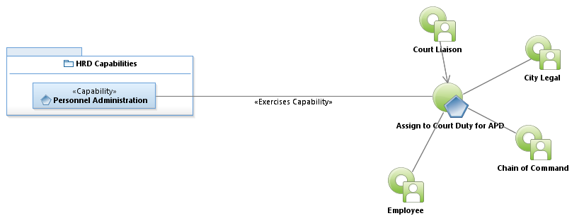

Use Case Model: Assign to Court Duty for APD
Architect: Aaron Brown, IT Enterprise Architect, Senior
Date Last Modified: 04/22/2013
User Review: Gregg Olson, Sgt. Jeff Crawford
Date: 04/22/2013
When a Subpoena is served to an APD officer, depending on availability, either schedule the officer or request a "motion of continuance."
Follow link to Role Definitions

Use Case Model: Assign to Court Duty for APD
Activity Model: Assign to Court Duty for APD